Stein's (1956) celebrated shrinkage results imply that one can improve upon
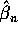
in Gaussian regression problems with parametric dimension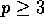
by shrinking toward some fixed point, thereby trading bias for variance reduction. Judge and Bock (1978) treat this subject in some detail from an econometric standpoint. One might characterize this as statistical stoicism - through restraint, self-discipline and temperance we achieve the noble purpose of reduced mean square error. For others, it may be interpreted as a form of Bayesian parsimony.We have no quarrel with such philosophies. They are fine for those who, like La Fontaine's ant, prefer to toil all summer to prepare for the hardships of winter. But who speaks out for the profligacy of the grasshopper, for gluttony and reckless abandon? Can such ideas have a place in the dismal annals of econometrics? We beg the gentle reader's momentary indulgence to consider the following foolishly profligate estimator:
Augment the p-columns of the initial design matrix X, by q randomly generated columns, D. Let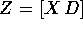
, and consider estimating the augmented model by ordinary least squares,
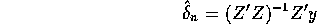
and denote the familiar Eicker-White covariance matrix estimator for
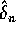
by
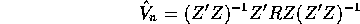
where
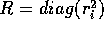
and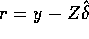
. Finally, let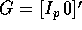
, so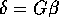
, and define the GMM estimator of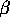
, by solving
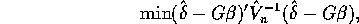
yielding,
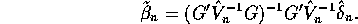
This may appear to be the recipe of some demented sack-guzzler, but there is method in the madness. Our first result shows that we are not trading bias for variance reduction as in Stein estimation.
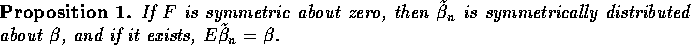
Proof: The argument is essentially that of Kakwani(1967); see also the treatment in Schmidt(1976). Fix Z and write
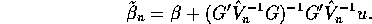
Observe that
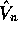
is an even function of u, that is u and -u yield the same . Since by assumption u and -u have the same distribution, it follows that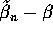
and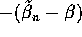
have the same distribution. And the result then follows by unconditioning on Z.We can conclude from this result that any improvement in mean squared error acheived by
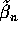
must be purely a matter of variance reduction. Since for Gaussian F it is well known that is minimum variance unbiased we obviously must narrow the class of F's to exclude this case. Our next result which is an immediate corollary of Theorem 2.2 of Koenker, Machado, Skeels, and Welsh(1994), henceforth KMSW, specifies the class of distributions for which we may expect an improvement.
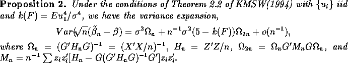
The first term in this variance expansion is familiar, it is the variance that would result had we used the true
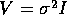
. The second term which is of order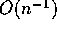
may be attributed to the ``heteroscedasticity correction'' of the GMM estimator and is probably less so. It is easy to see that the matrix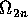
is positive definite and consequently for distributions with kurtosis greater than 5, the Falstaff estimator, , has strictly smaller asymptotic covariance matrix, to order than the Gauss-Markov estimator .Of course, for Gaussian F and other distributions with modest kurtosis the second term contributes a positive component and consequently the ``correction for heteroscedasticity'' is counter-productive. This degradation in performance at the Gaussian model is hardly surprising since classical sufficiency arguments as in Rothenberg(1984) imply such a loss is inevitable.
Intuitively, we would expect that ignoring the fact that our observations are homoscedastic couldn't help us. We should be punished for ignoring relevant information. Shouldn't we? How then do we gain from the profligate behavior of the Falstaff estimator? How can estimating an artificially expanded model and then correcting for heteroscedasticity in an iid error model conceivably increase the precision of our estimates? To explore these questions we begin by considering the particularly simple special case of estimating a scalar location parameter. Since in this case X = 1 an n-vector of ones, the form of is especially simple:
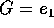
,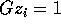
, and therefore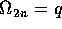
, the number of augmented columns in D. Thus our expansion reduces in this case to
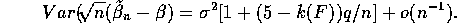
In the next section we report on a small monte-carlo experiment designed to evaluate the accuracy of this expansion for moderate sample sizes. What is the Falstaff estimator doing in this simple location context? The Falstaff estimator of location may be expressed as
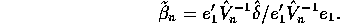
Obviously, if is proportional to the identity matrix and D is orthogonal to X then
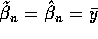
. However, generally, all the coordinates of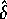
contribute to . If converges in probability to a nonstochastic matrix, the iid error assumption ensures that the limit is proportional to the identity. This simply restates the obvious fact that if is consistent as it would be in the present circumstances if q were fixed, then the Falstaff improvement vanishes as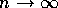
. Whether there may be some scope for asymptotic improvement if the sequence of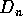
matrices could be chosen to preserve a stochastic contribution from remains an open question.